EXECUTIVE CONCLUSION기준일 2026-07-13 · 글로벌+한국
콘텐츠는 넘치지만,
실행은 플랫폼 사이에서 끊긴다
FlowMe의 첫 시장은 또 하나의 계획 도구가 아니다. 제작자가 만든 원본 콘텐츠를 사용자의 캘린더·할 일·노트로 옮기고, 그 과정의 귀속과 실행 신호를 연결하는 시장이다.
전략 결론
FlowMe는 콘텐츠 플랫폼과 생산성 도구 사이에 붙어, 출처가 있는 콘텐츠를 재사용 가능한 실행 Flow로 바꾼다.
AI는 초안을 만들 수 있다. FlowMe가 소유해야 할 것은 원본·버전·제작자 귀속·사용자 수정·외부 실행·완료 신호가 이어지는 기록이다.
시장 결론관심·수익·실행이 서로 다른 플랫폼에 나뉘어 있다.
초기 진입학습·커리어 + 여행·생활 이벤트의 ‘날짜·순서·완료 기준이 있는 콘텐츠’
핵심 연결YouTube·NAVER·Brunchstory → FlowMe → Calendar·Todo·Note
수익화 순서외부 전환 귀속 → 제작자 운영 구독 → 검증 후 유료 Flow 거래
58전체 후보
longlist
25정량·전략
비교 대상
15상세 분석
클러스터
16실제 공식
제품 화면
사실 수치와 제품 기능은 공식 공시·도움말·앱스토어를 우선 확인했다. 추론 FlowMe 우선순위 점수는 전략 판단이다. 미측정 FlowMe의 반복 사용·전환·매출은 아직 없다. 전체 근거 원장
METHOD큰 숫자보다 비교 가능한 근거를 우선
58개를 훑고, 25개를 비교하고,
15개만 깊게 봤다
모든 회사를 같은 깊이로 설명하지 않았다. FlowMe의 공급·실행·수익 경로를 결정하는 대상만 압축했다.
58전체 후보콘텐츠 12 · 제작자 수익 12 · 생산성 14 · AI/자동화 8 · 전문 앱 12
→
25정량 비교공개 규모·수익모델·기능·연결 방식·권리 위험·FlowMe 적합도
→
15상세 분석진입·연결·경쟁 결정을 바꾸는 대표 플랫폼과 전문 앱 클러스터
근거 수준
A공시·IR·연차보고서
B공식 제품·도움말·뉴스룸
C공식 앱스토어 화면
DFlowMe 내부 집계·전략 추론
ND공식 확인 불가·비교 제외
MAU, 주간 이용자, 가입자, 유료 구독자, 매출, GMV, 제작자 지급액은 서로 다른 지표다. 같은 막대에서 순위를 매기지 않았다.
상세 분석 15개
YouTubeInstagram / TikTokNAVER / Brunchstory
Patreon / SubstackGumroad / Notion MarketTeachable / Kajabi
Udemy / Coursera / CLASS101Calendar / TodoistNotion / Obsidian
ZapierChatGPT / GeminiDuolingo
Samsung FoodTripItOhouse
대상·점수·출처·미확인 항목은 근거 원장 JSON에 별도 저장했다.
MARKET MAP관심 → 수익 → 실행의 가치사슬
빈 곳은 ‘계획 앱’이 아니라
콘텐츠가 실제 행동으로 바뀌는 구간이다
대형 플랫폼은 각자 잘하는 구간을 소유한다. FlowMe가 차지할 곳은 원본을 복제하는 곳이 아니라, 원본과 실행 결과를 이어 주는 중립 연결층이다.
콘텐츠 플랫폼
- YouTube · Instagram · TikTok
- NAVER Blog/Cafe · Brunchstory
- 강점: 검색·추천·구독·커뮤니티
- 약점: 저장 이후 행동이 플랫폼 밖으로 끊김
판매·멤버십·강의
- Patreon · Substack · Gumroad
- Teachable · Kajabi · CLASS101
- 강점: 결제·고객·판매 분석
- 약점: 구매 후 실제 사용·완료 신호가 약함
원본 → 실행 Flow
- 출처·canonical URL·검토일·버전
- 날짜·순서·완료 기준·주의
- 제작자 귀속·사용자 수정·fork
- export·저장·완료·중단·건너뜀 신호
사용자의 기존 도구
- Calendar · Todo · Note · Sheet
- Google · Samsung · Outlook · Notion
- 강점: 시간·체크·문서·진도 관리
- 약점: 콘텐츠 원본과 제작자 귀속이 사라짐
사용자 여정의 빈 구간‘봤다·저장했다’와 ‘내 일정·체크리스트에 넣고 끝냈다’ 사이
제작자 여정의 빈 구간‘팔았다·조회됐다’와 ‘누가 실제로 사용했고 어디서 막혔는지 알았다’ 사이
전략적 추론 기존 사용자·제작자 가치사슬 보고서와 이번 58개 생태계 비교를 합친 결론.
SCALE SIGNALS서로 다른 지표는 분리해서 비교
사람은 콘텐츠·AI에 모이고,
돈은 광고·구독·거래에 모인다
규모는 ‘어디에 붙을지’를 보여 주지만, FlowMe의 기회 크기를 직접 증명하지는 않는다.
사업 규모 공시
통화·사업 범위가 달라 막대 길이는 각 묶음 내부 시각 보조일 뿐 직접 순위가 아니다. S01·S08·S27·S30.
3–5 YEAR TREND매출·유료 구독·제작자 수익의 실제 흐름
성장은 ‘콘텐츠 생성’보다
반복 사용·구독·운영에서 나온다
AI가 콘텐츠 생산량을 늘려도, 플랫폼 가치가 커지는 지점은 사용자가 계속 실행하고 제작자가 운영 성과를 확인하는 구간이다.
반복 사용과 제작자 운영의 마일스톤
6.6→12.2MDuolingo 유료 구독자2023 Q4 → 2025 Q4. 언어학습에서 반복 실행에 대한 지불 의사.
$6→9BKajabi 고객 누적 수익2023.10 → 2025. 제작자 운영·판매 인프라의 경제 가치.
$60B+YouTube 2025 연간 매출광고+구독. 콘텐츠 관심과 제작자 공급이 이미 거대한 곳에 FlowMe가 붙어야 함.
S40·S41 · Kajabi 2023 · 2025 · S01.
전략 해석 FlowMe가 AI 계획 생성 횟수를 쌓는 것만으로는 부족하다. 제작자의 원본이 얼마나 재사용됐고, 사용자가 무엇을 수정·실행·완료했는지 쌓여야 플랫폼 자산이 된다.
CREATOR ECONOMICS제작자가 이미 돈을 버는 곳을 먼저 활용
P0에서 결제망을 만들 이유는 없다.
귀속과 사용 성과를 먼저 만들어야 한다
제작자 플랫폼은 이미 결제·세금·환불·정산을 처리한다. FlowMe의 첫 유료 가치는 콘텐츠를 더 잘 팔고, 더 오래 쓰이게 하고, 실제 사용을 보여 주는 것이다.
플랫폼가격·수수료제작자 가치FlowMe가 배울 점
Patreon10% + 처리비멤버십·일회성 판매·커뮤니티팬 관계는 남기고 Flow 실행·완료를 보강
Substack10% + Stripe발행·유료 구독·유입·열람 분석전문가 글 옆 실행 부가상품
Gumroad10%+$0.50디지털 상품·전환·매출·유입 분석구매는 외부, 사용·재사용은 FlowMe
Notion Market8%+$0.40템플릿 거래·쿠폰·webhook·환불재사용 자산 거래의 가장 가까운 기준
Teachable$29~/월강의·진도·완료·판매·제휴P1 제작자 운영 구독의 가격·기능 기준
Kajabi$71~/월올인원 제작·마케팅·고객·커뮤니티기능 상한. FlowMe는 더 좁게 시작
CLASS10150% 지급 풀구독 수익을 콘텐츠 기여로 배분P2 거래 전 정산 복잡성의 경고
P0 · 외부 전환원본 상품·예약·제휴 CTA와 귀속 클릭. 결제·환불·세금은 외부 플랫폼.
P1 · 제작자 운영 구독발행·버전·재사용·export·완료 집계가 반복 업무가 된 뒤 과금.
P2 · 거래 수수료권리·환불·정산·민감 영역 게이트가 검증된 Flow만 거래.
Patreon · Substack · Gumroad · Notion · Teachable · Kajabi · CLASS101
CAPABILITY GAP강함 ● · 일부 ● · 약함 ○
대부분은 ‘발행’이나 ‘관리’에 강하다.
원본과 실행을 함께 남기는 곳은 드물다
이 표의 목적은 승자를 뽑는 것이 아니라, FlowMe가 어디에 붙고 무엇을 만들지 구분하는 것이다.
대상발행·발견제작자 수익실행 구조화실행 이력출처·버전외부 이동
YouTube / IG / TikTok
NAVER / Brunch
Patreon / Substack
Gumroad / Market
Teachable / Kajabi
Calendar / Todo
Notion / Obsidian
ChatGPT / Gemini
전문 앱
FlowMe 목표
핵심 기능일부 제공약하거나 핵심 아님공식 기능 설명을 바탕으로 한 전략 분류
제품별 상세 근거와 한계는 25개 비교 원장 참조.
OFFICIAL SCREENS · DISTRIBUTION공식 제품 화면 1–4 / 16
콘텐츠는 이미 큰 플랫폼에 있다.
FlowMe는 원본 옆의 실행 버튼으로 시작한다

YouTube제작·커뮤니티·수익·성장 도구원본과 팬은 YouTube에 남긴다. FlowMe는 설명·고정 댓글·프로필에서 실행 Flow로 연결한다.
공식 화면
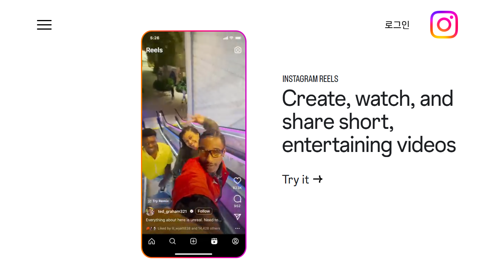
Instagram짧은 영상의 생성·시청·공유발견은 강하지만 일정·체크·진도는 약하다. 짧은 원본일수록 조건·주의를 보존해야 한다.
공식 화면
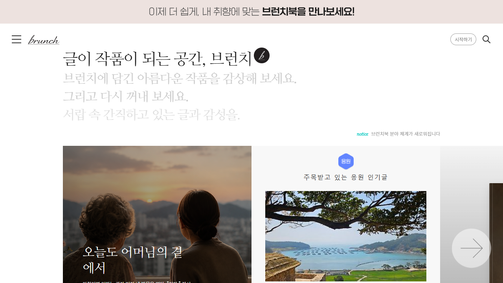
Brunchstory한국 작가·장문 원본의 발견맥락과 전문성이 있는 글을 복제하지 않고, 작가 귀속과 원문 확인을 유지한 실행 부록으로 전환한다.
공식 화면
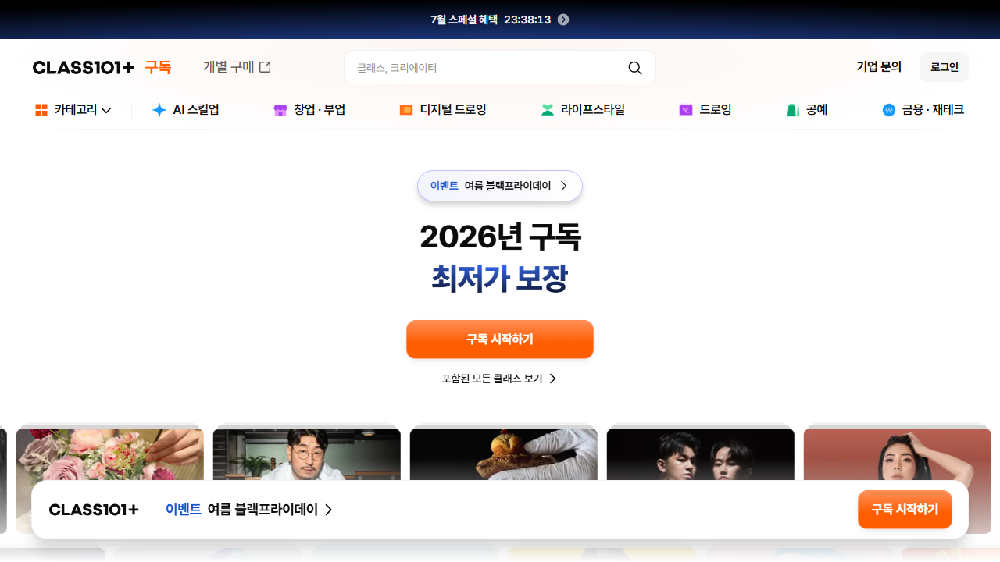
CLASS101한국 제작자 강의 구독·카테고리 유통학습 콘텐츠 공급과 수익 배분의 벤치마크다. FlowMe는 LMS가 아니라 외부 실행·복습 구조를 보강한다.
공식 화면
OFFICIAL SCREENS · CREATOR BUSINESS공식 제품 화면 5–8 / 16
제작자는 ‘AI 생성’보다
판매·귀속·재사용·성과에 돈을 낸다
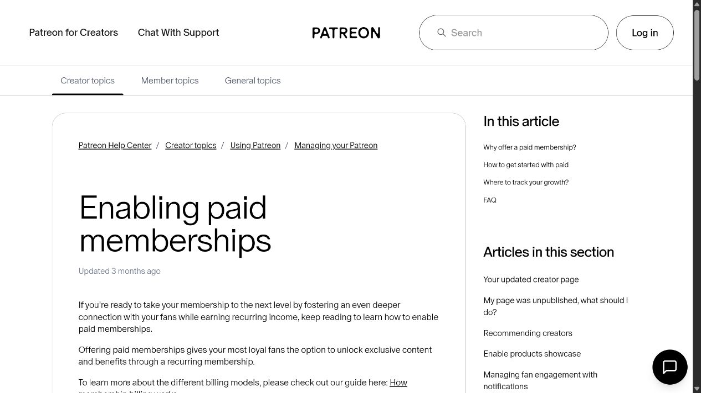
Patreon팬 관계와 반복 수익FlowMe는 결제를 가져오지 않고, 멤버 전용 원본이 실제 행동으로 이어지는 후속 가치를 만든다.
공식 제품
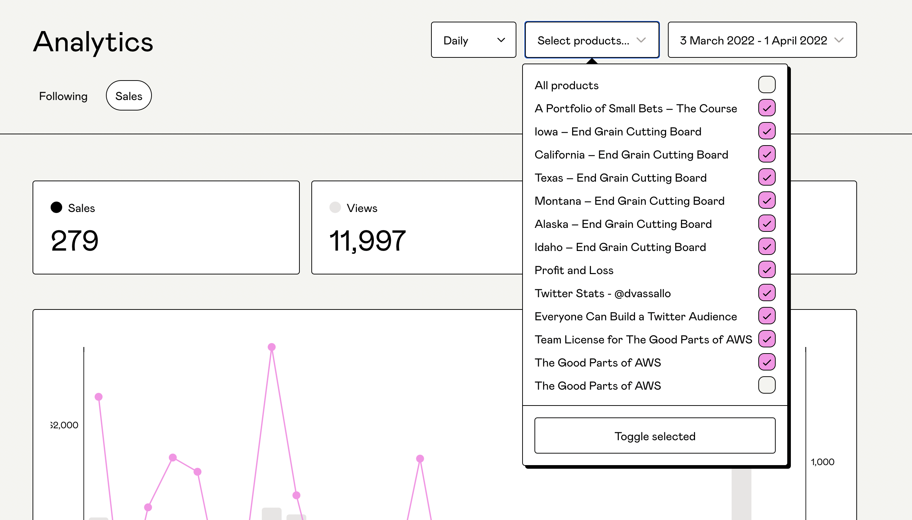
Gumroad조회·구매·전환·매출·유입 분석제작자가 이미 보는 판매 지표에 Flow 사용·export·완료 지표를 더하는 것이 P1 가치다.
공식 도움말
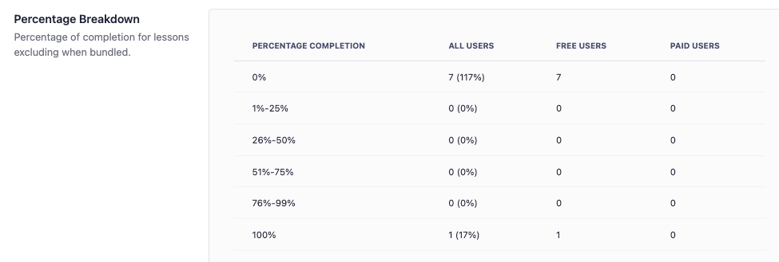
Teachable진도·완료·참여 분석제작자 운영 도구의 핵심은 콘텐츠 생성이 아니라 누가 어디까지 했는지 보는 것이다.
공식 도움말
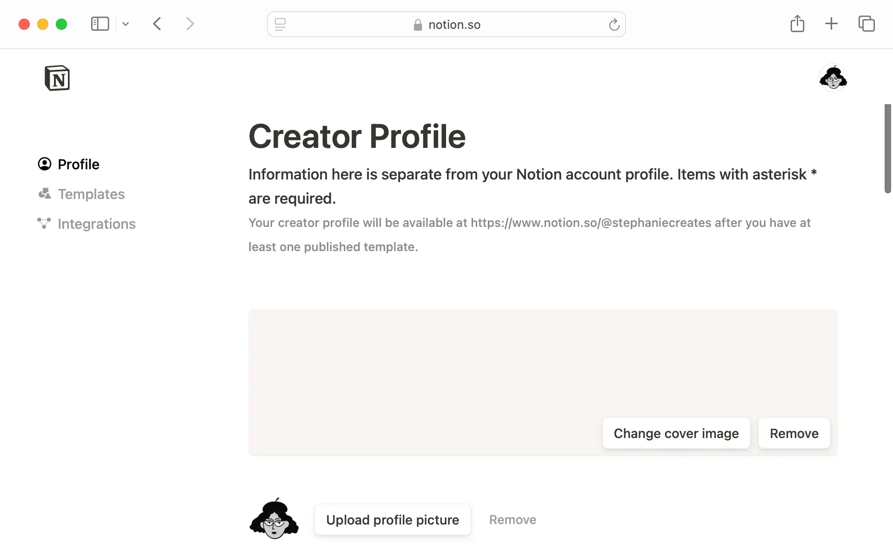
Notion Marketplace템플릿을 재사용 자산으로 거래Flow가 반복 사용되는 자산이 될 수 있음을 보여 주는 가장 가까운 시장. 단, 거래는 P2다.
공식 도움말
OFFICIAL SCREENS · EXECUTION & AI공식 제품 화면 9–12 / 16
사용자의 실행 도구를 대체하지 말고,
도착 형식을 잘 만들어야 한다
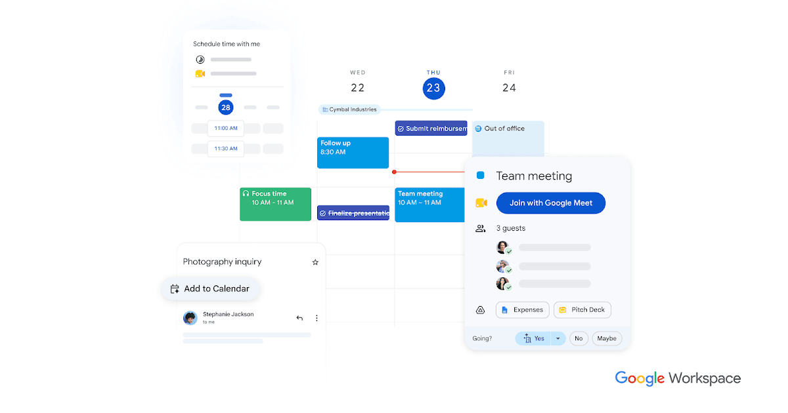
Google Calendar시간·일정 실행의 기본 목적지P0는 .ics. 일정 안에 제목·날짜·출처·검토일·주의를 최소로 남긴다.
공식 제품
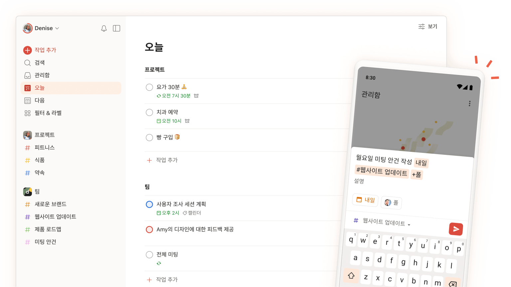
Todoist체크·기한·프로젝트 실행P0는 checklist 복사·Markdown. FlowMe가 할 일 관리 UI 전체를 다시 만들 필요는 없다.
공식 제품
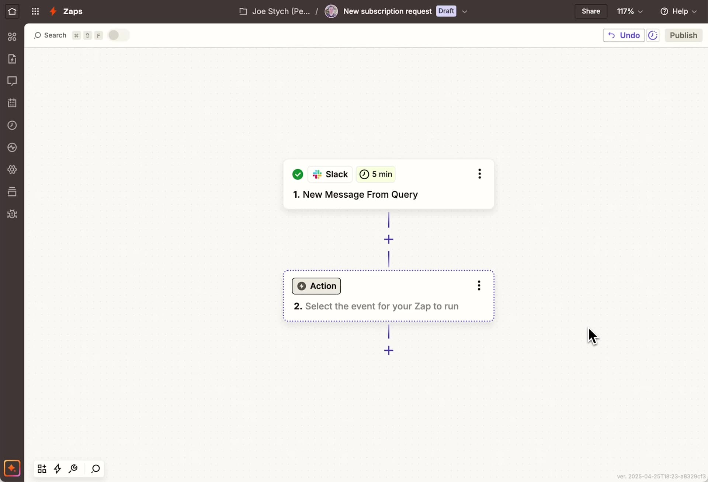
Zapier9,000개 이상 앱 자동화반복 export·webhook 수요가 확인된 뒤 P2에 붙인다. P0에서 범용 자동화 플랫폼을 만들지 않는다.
공식 도움말
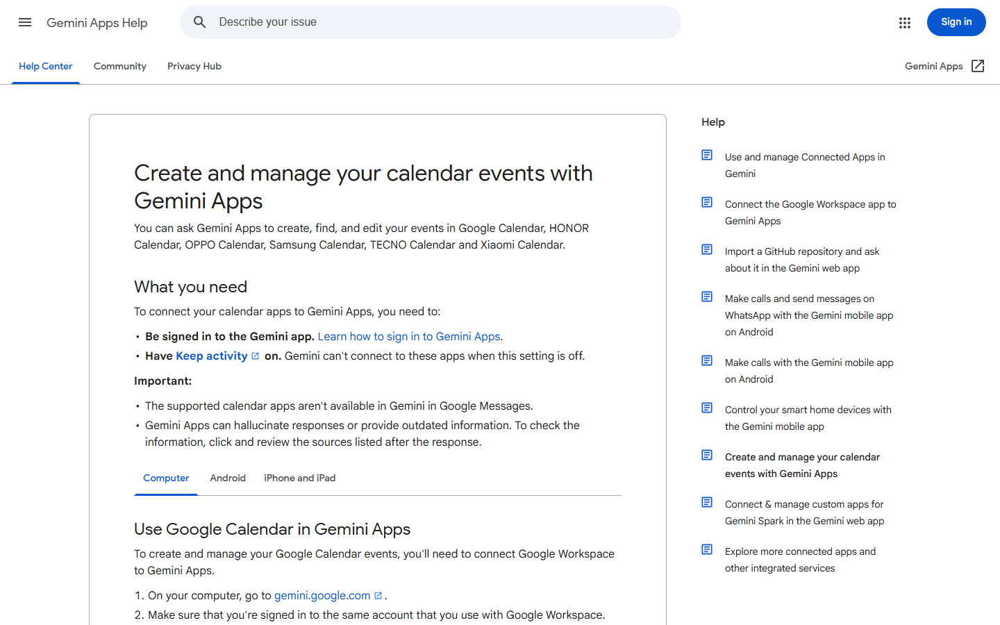
GeminiAI가 일정 생성과 도구 실행까지 수행FlowMe의 방어력은 ‘계획 생성’이 아니라 원본·버전·제작자 귀속·실제 사용 이력에 있어야 한다.
공식 설명
VERTICAL OPPORTUNITY100점 평가 + 안전 게이트
첫 시장은 한 Vertical이 아니라
실행 구조가 선명한 두 상황군이다
점수가 높아도 안전·권리 위험이 크면 시작하지 않는다. 제품 계약은 수평으로 유지하고, 콘텐츠 수급과 메시지만 구체화한다.
① 학습·커리어제작자 수익 동기와 반복 진도가 가장 강하다. 강의 플랫폼이 아니라 YouTube·Blog·뉴스레터의 외부 실행 부록으로 시작한다.
② 여행·생활 이벤트날짜·준비물·예약·비교가 자연스럽게 Calendar·checklist·sheet로 나뉜다. 현재 FlowMe 계약과 가장 잘 맞는다.
점수보다 우선하는 안전 게이트건강·재무·법률은 수요가 커도 공식 원문·검토일·주의·사용자 확인 없이는 export와 저장을 잠가야 한다.
점수 구성: 수요 20 · 콘텐츠→실행 문제 20 · 제작자 동기 15 · artifact 적합 15 · 유통 10 · 반복 데이터 10 · 현실성 10. 축별 근거와 한계는 원장 verticalScores.
OFFICIAL SCREENS · VERTICAL BENCHMARKS공식 제품 화면 13–16 / 16
전문 앱은 실행을 깊게 소유한다.
FlowMe는 그 깊이를 수평 계약으로 옮긴다
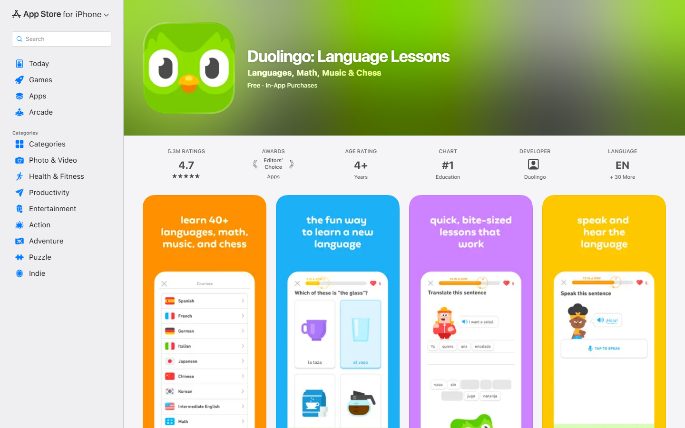
Duolingo짧은 단위·반복·연속 실행FlowMe가 배울 것은 언어 콘텐츠가 아니라 완료 기준과 반복 피드백의 설계다.
App Store
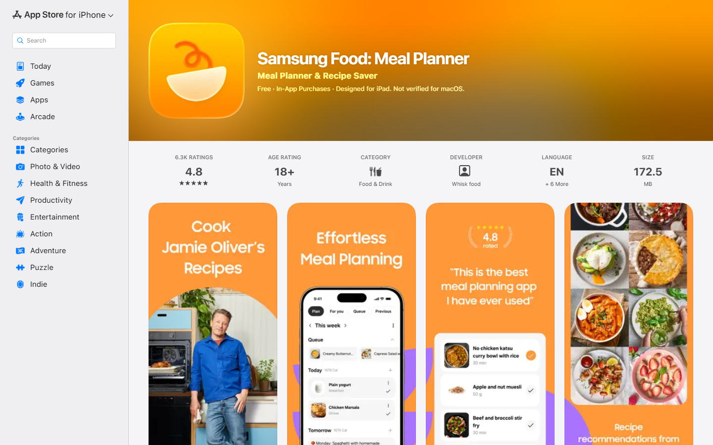
Samsung Food레시피 저장→식단→장보기콘텐츠가 여러 실행 artifact로 변환되는 가장 직접적인 사례. 영양 Vertical 자체와는 경쟁하지 않는다.
App Store
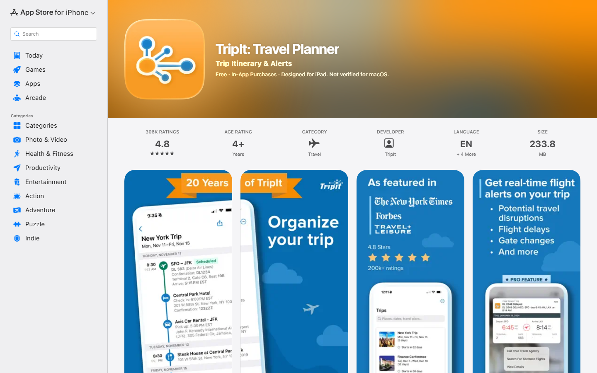
TripIt예약 메일→하나의 여정·알림예약 이후는 TripIt이 강하다. FlowMe는 예약 전 제작자 콘텐츠를 준비·판단 Flow로 바꾸는 데 집중한다.
App Store
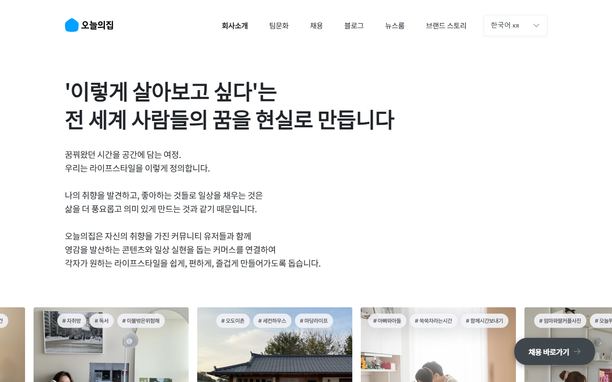
오늘의집콘텐츠·커뮤니티·커머스·서비스한국에서 콘텐츠가 거래와 설치·이사까지 이어질 수 있음을 보여 준다. FlowMe는 그 사이의 일정·체크·귀속을 맡는다.
공식 화면
COMPETE · CONNECT · USE25개 비교 대상의 역할 압축
무엇과 경쟁할지가 아니라
어디에 붙고 무엇을 소유할지가 먼저다
P0는 URL과 파일 형식으로 연결한다. 직접 API는 반복 사용이 확인된 목적지만 선택한다.
제작자 유통 채널 · P0YouTubeInstagramTikTokNAVERBrunchSubstack
원본·팬·추천은 기존 플랫폼. FlowMe는 creator CTA, source, version, attribution.
Export 목적지 · P0Google CalendarTodoistNotionObsidianSheets
.ics · Markdown · checklist부터. OAuth 없이 사용자 소유 도구로 이동.
외부 결제·판매 · P0PatreonGumroadSubstackNotion Market
상품·멤버십·예약·제휴 전환을 외부에서 완료하고 FlowMe는 귀속만 측정.
제작자 운영 기준 · P1TeachableKajabiUdemyCourseraCLASS101
발행·진도·완료·분석·수익 배분을 배우되 LMS와 강의 마켓은 만들지 않음.
자동화·AI 연결 · P1/P2ChatGPTGeminiClaudeZapierMCP
AI는 초안·개인화. 자동화는 검증된 Flow contract 뒤에 연결.
전문 앱 · 벤치마크/파트너DuolingoStravaSamsung FoodTripItOhouse
Vertical 실행의 깊이를 학습. 건강·재무·법률과 전문 데이터 경쟁은 보류.
한 문장 포지션 · FlowMe는 사람들이 콘텐츠를 발견하는 곳에 붙어, 제작자 귀속을 보존한 실행 Flow를 만들고, 사용자가 이미 쓰는 도구로 보낸다.
전략 판정 25개 대상별 점수·역할·미확인 항목은 comparisonSet 참조.
CURRENT READINESS시장 기회와 현재 준비도의 차이
기술의 첫 뼈대는 있다.
제작자 공급·귀속·성과 운영이 비어 있다
현재 저장소는 URL-first와 source-backed Flow를 검증할 수 있다. 그러나 제작자가 적극적으로 발행하고 수익을 늘리는 구조는 아직 증거가 없다.
현재 저장소 집계 실제 명령 출력
153콘텐츠 번들
44keep
105fix
26source-backed map
10URL lookup map
7public catalog map
2Home map
0결제·정산·계정 분석 확인
집계 시각 2026-07-12T15:07:07.840Z. 현재 worktree의 registry/lifecycle 출력. 제품 사용 성과가 아니라 준비도 수치.
영역현재 있는 것더 신경 쓸 것
콘텐츠 수급source-backed 후보와 URL lookup두 상황군의 제작자 원본을 5~10개씩 묶고, 발행 권리·canonical URL·업데이트 책임자를 함께 확보
제작자 가치creator channel·귀속 방향Flow 생성 편의보다 원본 CTA 클릭·재사용·export·완료 집계를 먼저 보여 줄 운영 화면 정의
개발 우선순위URL-first·source ledger·export 전략.ics·Markdown·checklist에 creator/source/version을 보존하고, view→export→완료 이벤트 이름을 고정
품질·권리risk·caution·checked date 원칙제작자 원본과 사용자 수정본을 분리하고, 건강·재무·법률은 export/save 잠금 유지
사업 증거아직 미측정반복 발행 제작자, Flow 재사용, 외부 전환, 사용자 완료를 각각 측정. 조회수만 성공으로 보지 않음
REVENUE PATH시장 규모 인용이 아닌 bottom-up 가설
매출은 한 번에 키우지 않는다.
가치 증명 순서대로 연다
아래 계산은 전망이 아니다. 가격·제작자 수·사용량·전환율을 공개한 민감도 예시이며, 실제 FlowMe 성과는 모두 미측정이다.
귀속 가능한 전환
제작자 100명 × Flow 5개 × 월 100회 사용 × 전환 3% × 건당 3,000원
월 450만원
결제는 외부. FlowMe는 원본 CTA 클릭·전환 귀속·환불 제외 기준을 측정한다.
월 구독
유료 제작자 500명 × 월 39,000원
MRR 1,950만원
발행·버전·재사용·export·완료 분석이 반복 업무가 된 뒤 과금한다.
거래 수수료
월 10,000건 × 평균 7,000원 × 수수료 10%
월 700만원
권리·환불·세금·정산·민감 영역 검토 비용을 빼기 전 단순 총수익 예시다.
가설·미측정 이 숫자를 사업계획 매출로 사용하면 안 된다. P0는 `Flow 열람 → export/저장 → 원본 CTA → 외부 전환 → 완료`가 한 제작자 단위로 연결되는지부터 확인해야 한다.
가격·수수료 기준: Patreon 10% · Substack 10% · Gumroad 10%+$0.50 · Notion Marketplace 8%+$0.40 · Teachable $29~/월 · Kajabi $71~/월. 상세 출처는 revenueBenchmarks.
ROADMAP & CEO DECISIONS승인 후 개발·콘텐츠 세션으로 넘길 기준
다음 단계는 기능 확대가 아니라
공급·귀속·실행 증거를 같은 순서로 쌓는 일이다
콘텐츠→Flow→기존 도구
집중학습·커리어 + 여행·생활 이벤트 제작자 원본, .ics·Markdown·checklist, source/version/creator 귀속.
수익외부 상품·예약·제휴 CTA와 전환 귀속.
하지 않음결제·LMS·Home 전면 개편·OAuth·범용 AI 자동 발행.
발행·수정·성과 확인
집중버전 비교, 개인 수정/fork 집계, export·완료 리포트, 동의 기반 익명 사용 신호.
수익제작자 운영 구독·고급 분석·브랜딩.
조건반복 발행과 월간 유지가 확인된 제작자군.
검증된 자산만 확장
집중direct API·Zapier/MCP·partner tools, 권리·환불·정산, 신뢰·품질 랭킹.
수익유료 Flow 거래·기업/파트너 API.
조건구매 후 실행률과 민감 영역 검토 체계가 증명됨.
CEO 결정 1초기 공급 시장을 학습·커리어 + 여행·생활 이벤트의 두 상황군으로 승인할 것인가?
CEO 결정 2P0 제작자 가치를 결제가 아닌 귀속·재사용·외부 전환 측정으로 제한할 것인가?
CEO 결정 3P0 연결을 .ics·Markdown·checklist로 고정하고 OAuth·전문 기능을 보류할 것인가?